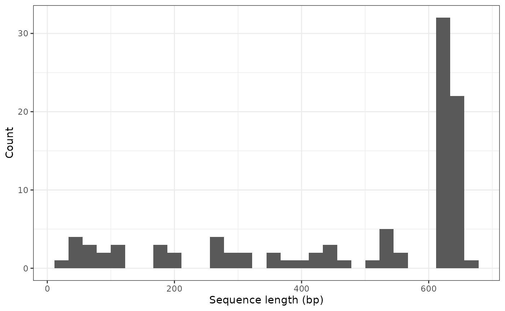

Introduction to the barcodeMineR package
Source:vignettes/intro_barcodeMineR.Rmd
intro_barcodeMineR.RmdNOTE: This package is still in development and awaiting for CRAN approval.
The barcodeMineR package allows to recover DNA barcodes from a vector of taxonomic names. The most basic usage consists in the recovery of the taxonomic information first, followed by the download of all records available. The function get_ncbi_taxonomy does exactly that:
library(barcodeMineR)
# search taxonomic information for a species on the NCBI
tax <- get_ncbi_taxonomy("Dissostichus mawsoni")
tax
#> queryName taxid rank scientificName phylum class
#> 1 Dissostichus mawsoni 36200 species Dissostichus mawsoni Chordata Actinopteri
#> order family genus species
#> 1 Perciformes Nototheniidae Dissostichus Dissostichus mawsoniTaxonomic information for the species Dissostichus mawsoni is available at the NCBI taxonomy database, and we obtained a data frame class object with basic information regarding it.
This object can be used for the next command, which will retrieve all DNA barcodes available corresponding to this species at the NCBI nucleotide database. One of the main features of the next function consists in separating the different CDS and rRNA products of each accession number. You can leave the argument ask to default (TRUE) and wait to be asked to choose which CDS/rRNA to select. For now, we leave this to FALSE, so we retain automatically all CDS/rRNA features:
rec_NCBI <- download_ncbi(tax, ask = FALSE)Now we have the final refdb formatted data frame including all DNA barcodes available at the NCBI for the species Dissostichus mawsoni.
#> # A tibble: 192 × 30
#> recordID markerCode DNA_seq phylum class order family genus species source
#> <chr> <chr> <DNA> <chr> <chr> <chr> <chr> <chr> <chr> <chr>
#> 1 HM422302.1 COI CTCTACT… Chord… Acti… Perc… Notot… Diss… Dissos… NCBI
#> 2 ON000293.1 COX1 GCGCCTG… Chord… Acti… Perc… Notot… Diss… Dissos… NCBI
#> 3 MK843765.1 COI TCTCTAC… Chord… Acti… Perc… Notot… Diss… Dissos… NCBI
#> 4 DQ498816.1 Cytb GCCACCC… Chord… Acti… Perc… Notot… Diss… Dissos… NCBI
#> 5 DQ498794.1 Rhod GCCTACA… Chord… Acti… Perc… Notot… Diss… Dissos… NCBI
#> 6 MK500763.1 enc1 TCTGACG… Chord… Acti… Perc… Notot… Diss… Dissos… NCBI
#> 7 MG729451.1 COI GAACTTA… Chord… Acti… Perc… Notot… Diss… Dissos… NCBI
#> 8 KY656477.1 COI GCCGGAA… Chord… Acti… Perc… Notot… Diss… Dissos… NCBI
#> 9 LC138011.1 ND1 ATGCTTT… Chord… Acti… Perc… Notot… Diss… Dissos… NCBI
#> 10 LC138011.1 ND2 ATGAGCC… Chord… Acti… Perc… Notot… Diss… Dissos… NCBI
#> # ℹ 182 more rows
#> # ℹ 20 more variables: lat <dbl>, lon <dbl>, lengthGene <int>, sampleID <chr>,
#> # QueryName <chr>, identified_by <chr>, taxNotes <lgl>, db_xref <chr>,
#> # sourceID <chr>, NCBI_ID <chr>, institutionStoring <lgl>,
#> # collected_by <chr>, collection_date <chr>, altitude <lgl>, depth <lgl>,
#> # country <lgl>, directionPrimers <chr>, lengthSource <int>,
#> # PCR_primers <chr>, note <chr>This data frame includes 192 records (rows). However, if we were to search for all Dissostichus mawsoni records on the NCBI nucleotide database, using the same default filters called inside the barcodeMineR functions, we will notice that there are less accession numbers than the number of records obtained by the download_ncbi function:
# the default filters exclude whole genome shotgun sequences and transcribed
# shotgun assembly products
rentrez::entrez_search(db="nucleotide", term="(((txid36200[ORGN] NOT wgs[Keyword]) NOT tsa[Keyword]) AND biomol_genomic[PROP]) AND (cds[Feature key] OR rrna[Feature key])")
#> Entrez search result with 131 hits (object contains 20 IDs and no web_history object)
#> Search term (as translated): (((txid36200[ORGN] NOT wgs[Keyword]) NOT tsa[Keywo ...The package recovered every single DNA barcode/gene/product available for the accession numbers corresponding to Dissostichus mawsoni, thus, for example, for the accession number ‘LC138011.1’ we obtained both ND1 and ND2 markers as separate records in the refdb data frame.
In case you want to choose which marker to keep in the final tibble, set the ask argument to TRUE (default), and, when asked, choose which marker to download data for:
rec_NCBI <- download_ncbi(tax)
#>
#> # A tibble: 43 × 2
#> Gene_value n
#> <chr> <int>
#> 1 COI 8
#> 2 Dyst 3
#> 3 myh6 3
#> 4 ND2 3
#> 5 tbr1 3
#> 6 LDHA 2
#> 7 ND4 2
#> 8 Ptr 2
#> 9 Rhod 2
#> 10 TMO-4C4 2
#> 11 ATPase 6 1
#> 12 ATPase 8 1
#> 13 CaM 1
#> 14 CK 1
#> 15 COII 1
#> 16 COIII 1
#> 17 COX1 1
#> 18 Cyt b 1
#> 19 cytb 1
#> 20 Cytb 1
#> 21 EGR1 1
#> 22 EGR2B 1
#> 23 EGR3 1
#> 24 enc1 1
#> 25 ENC1 1
#> 26 G6PDH 1
#> 27 GH 1
#> 28 Mb 1
#> 29 Mll 1
#> 30 MLL 1
#> 31 MLL4 1
#> 32 ND1 1
#> 33 ND3 1
#> 34 ND4L 1
#> 35 ND5 1
#> 36 ND6 1
#> 37 ngb 1
#> 38 RAG1 1
#> 39 rhod 1
#> 40 SEC61 1
#> 41 SH3PX3 1
#> 42 TPI 1
#> 43 zic1 1
#>
#> Indicate the row numbers corresponding to the CDS and rRNA of interest.
#> (0 will return none, other inputs will return all of them)
#> # A tibble: 63 × 2
#> Product_value n
#> <chr> <int>
#> 1 16S ribosomal RNA 33
#> 2 cytochrome oxidase subunit I 14
#> 3 cytochrome b 6
#> 4 NADH dehydrogenase subunit 2 5
#> 5 hepcidin 4
#> 6 immunoglobulin M heavy chain 4
#> 7 28S ribosomal RNA 3
#> 8 12S ribosomal RNA 2
#> 9 AFGP polyprotein precursor 2
#> 10 chimeric AFGP/trypsinogen-like serine protease precursor 2
#> 11 trypsinogen-like protease 1 2
#> 12 18S ribosomal RNA 1
#> 13 5S ribosomal RNA 1
#> 14 alpha-globin 1
#> 15 antifreeze glycoprotein H1_A1 1
#> 16 antifreeze glycoprotein H1_A10 1
#> 17 antifreeze glycoprotein H1_A12 1
#> 18 antifreeze glycoprotein H1_A2 1
#> 19 antifreeze glycoprotein H1_A3 1
#> 20 antifreeze glycoprotein H1_A4 1
#> 21 antifreeze glycoprotein H1_A5 1
#> 22 antifreeze glycoprotein H1_A6 1
#> 23 antifreeze glycoprotein H1_A7 1
#> 24 antifreeze glycoprotein H1_A8 1
#> 25 antifreeze glycoprotein H1_A9 1
#> 26 antifreeze glycoprotein H2_A1 1
#> 27 antifreeze glycoprotein H2_A2 1
#> 28 antifreeze glycoprotein H2_A3 1
#> 29 antifreeze glycoprotein H2_A4 1
#> 30 antifreeze glycoprotein H2_A7 1
#> 31 antifreeze glycoprotein H2_A8 1
#> 32 antifreeze glycoprotein/trypsinogen-like protease chimeric H1_C1 1
#> 33 antifreeze glycoprotein/trypsinogen-like protease chimeric H1_C2 1
#> 34 antifreeze glycoprotein/trypsinogen-like protease chimeric H1_C3 1
#> 35 antifreeze glycoprotein/trypsinogen-like protease chimeric H2_C1 1
#> 36 antifreeze glycoprotein/trypsinogen-like protease chimeric H2_C2 1
#> 37 antifreeze glycoprotein/trypsinogen-like protease chimeric H2_C3 1
#> 38 beta-globin 1
#> 39 E3 ubiquitin protein ligase 2 1
#> 40 H2_1b 1
#> 41 Mg2+/Mn2+-dependent protein phosphatase 1D 1
#> 42 MHC class II antigen 1
#> 43 polycystic kidney disease 1 1
#> 44 preprotrypsin-like protease 1
#> 45 structure specific recognition protein 1 1
#> 46 translocase of outer mitochondrial membrane 40 1
#> 47 trypsinogen H1_1c 1
#> 48 trypsinogen H1_1d 1
#> 49 trypsinogen H1_1e 1
#> 50 trypsinogen H1_1f 1
#> 51 trypsinogen H1_1g 1
#> 52 trypsinogen H1_3a1 1
#> 53 trypsinogen H1_3a2 1
#> 54 trypsinogen H1_3a3 1
#> 55 trypsinogen H2_1a 1
#> 56 trypsinogen H2_1c 1
#> 57 trypsinogen H2_1d 1
#> 58 trypsinogen H2_1e 1
#> 59 trypsinogen H2_1f 1
#> 60 trypsinogen H2_1g 1
#> 61 trypsinogen H2_3a1 1
#> 62 trypsinogen H2_3a4 1
#> 63 trypsinogen-like protease 2 1
#>
#> Indicate the row numbers corresponding to the CDS and rRNA of interest.
#> (0 will return none, other inputs will return all of them)The DNA barcodes will be in their 5’-to-3’ direction and of the correct length defined by the INSDC location descriptor, as they’ve been extracted from the single fasta sequence of the same accession number.
The same procedure can be applied using the functions querying the BOLD database, which have the same naming style. Here, we’re retrieving the taxonomy information from the BOLD database for the same species:
# search taxonomic information for a species on BOLD
tax <- get_bold_taxonomy("Dissostichus mawsoni")
tax
#> queryName taxid taxon rank records
#> 1 Dissostichus mawsoni 77420 Dissostichus mawsoni species 21The output is slightly different from the output of get_ncbi_taxonomy, however, it serves the same role. In fact, it can then be used to download all Dissostichus mawsoni records from the BOLD database.
rec_BOLD <- download_bold(tax, ask = FALSE)
rec_BOLD
#> # A tibble: 19 × 30
#> recordID markerCode DNA_seq phylum class order family genus species source
#> <chr> <chr> <DNA> <chr> <chr> <chr> <chr> <chr> <chr> <chr>
#> 1 ANGBF23589… COI-5P GCCGGA… Chord… Acti… Perc… Notot… Diss… Dissos… BOLD
#> 2 ANGBF23590… COI-5P GAACTT… Chord… Acti… Perc… Notot… Diss… Dissos… BOLD
#> 3 ANTFI127-06 COI-5P ------… Chord… Acti… Perc… Notot… Diss… Dissos… BOLD
#> 4 ANTFI160-06 COI-5P --TCTC… Chord… Acti… Perc… Notot… Diss… Dissos… BOLD
#> 5 EATFR006-12 COI-5P ------… Chord… Acti… Perc… Notot… Diss… Dissos… BOLD
#> 6 EATFR006-12 Rho GGTGCC… Chord… Acti… Perc… Notot… Diss… Dissos… BOLD
#> 7 EMRKT082-07 COI-5P NCTCTA… Chord… Acti… Perc… Notot… Diss… Dissos… BOLD
#> 8 FNZ726-06 COI-5P -CTCTA… Chord… Acti… Perc… Notot… Diss… Dissos… BOLD
#> 9 FNZ727-06 COI-5P -CTCTA… Chord… Acti… Perc… Notot… Diss… Dissos… BOLD
#> 10 FNZ728-06 COI-5P -CTCTA… Chord… Acti… Perc… Notot… Diss… Dissos… BOLD
#> 11 FNZ969-07 COI-5P TCTCTA… Chord… Acti… Perc… Notot… Diss… Dissos… BOLD
#> 12 FNZC284-09 COI-5P -CTCTA… Chord… Acti… Perc… Notot… Diss… Dissos… BOLD
#> 13 GBMNA17173… COI-5P GTGGCC… Chord… Acti… Perc… Notot… Diss… Dissos… BOLD
#> 14 GBMNB8127-… COI-5P TCTCTA… Chord… Acti… Perc… Notot… Diss… Dissos… BOLD
#> 15 GBMNF47574… COI-5P GCGCCT… Chord… Acti… Perc… Notot… Diss… Dissos… BOLD
#> 16 OCARH832-12 COI-5P --TCTC… Chord… Acti… Perc… Notot… Diss… Dissos… BOLD
#> 17 OCARH904-12 COI-5P --TCTC… Chord… Acti… Perc… Notot… Diss… Dissos… BOLD
#> 18 OCARH973-12 COI-5P --TCTC… Chord… Acti… Perc… Notot… Diss… Dissos… BOLD
#> 19 OCARH981-12 COI-5P --TCTC… Chord… Acti… Perc… Notot… Diss… Dissos… BOLD
#> # ℹ 20 more variables: lat <dbl>, lon <dbl>, lengthGene <int>, sampleID <chr>,
#> # QueryName <chr>, identified_by <chr>, taxNotes <lgl>, db_xref <chr>,
#> # sourceID <chr>, NCBI_ID <chr>, institutionStoring <chr>,
#> # collected_by <chr>, collection_date <lgl>, altitude <int>, depth <int>,
#> # country <chr>, directionPrimers <chr>, lengthSource <int>,
#> # PCR_primers <chr>, note <chr>We have retrieved 19 records from the BOLD database, corresponding to 18 different process-IDs. BOLD hosts other markers, but the vast majority of records correspond to Cytochrome c oxidase I sequences.
Searching species names, or taxa in general, using the taxonomy functions follows a set of rules that is described in the vignette “Searching taxonomy”.
Merging data from different repositories
We can now merge both refdb data frames to obtain a single one. The default behaviour of the next function will check which records have been mined from the other repository and return only the original record. If needed, this behaviour can be switched off by setting the argument resolve.conflicts to FALSE:
total <- mergeBarcodeOres(rec_NCBI, rec_BOLD)
#> '5' records from BOLD were mined from the NCBI.
#> If they are already represented by the NCBI barcodeOre they will be removed to avoid duplicates.
#> '3' records from NCBI were mined from BOLD.
#> If they are already represented by the BOLD barcodeOre they will be removed to avoid duplicates.
#> Duplicated records obtained from the BOLD will be kept.As we can see from the printed messages, some records were actually mined versions of other records obtained from the other repository. They have been removed after checking that the original version was downloaded from the opposite repository.
total
#> # A tibble: 203 × 30
#> recordID markerCode DNA_seq phylum class order family genus species source
#> <chr> <chr> <DNA> <chr> <chr> <chr> <chr> <chr> <chr> <chr>
#> 1 ON000293.1 COX1 GCGCCTG… Chord… Acti… Perc… Notot… Diss… Dissos… NCBI
#> 2 MK843765.1 COI TCTCTAC… Chord… Acti… Perc… Notot… Diss… Dissos… NCBI
#> 3 DQ498816.1 Cytb GCCACCC… Chord… Acti… Perc… Notot… Diss… Dissos… NCBI
#> 4 DQ498794.1 Rhod GCCTACA… Chord… Acti… Perc… Notot… Diss… Dissos… NCBI
#> 5 MK500763.1 enc1 TCTGACG… Chord… Acti… Perc… Notot… Diss… Dissos… NCBI
#> 6 MG729451.1 COI GAACTTA… Chord… Acti… Perc… Notot… Diss… Dissos… NCBI
#> 7 KY656477.1 COI GCCGGAA… Chord… Acti… Perc… Notot… Diss… Dissos… NCBI
#> 8 LC138011.1 ND1 ATGCTTT… Chord… Acti… Perc… Notot… Diss… Dissos… NCBI
#> 9 LC138011.1 ND2 ATGAGCC… Chord… Acti… Perc… Notot… Diss… Dissos… NCBI
#> 10 LC138011.1 COI GTGGCCA… Chord… Acti… Perc… Notot… Diss… Dissos… NCBI
#> # ℹ 193 more rows
#> # ℹ 20 more variables: lat <dbl>, lon <dbl>, lengthGene <int>, sampleID <chr>,
#> # QueryName <chr>, identified_by <chr>, taxNotes <lgl>, db_xref <chr>,
#> # sourceID <chr>, NCBI_ID <chr>, institutionStoring <chr>,
#> # collected_by <chr>, collection_date <chr>, altitude <int>, depth <int>,
#> # country <chr>, directionPrimers <chr>, lengthSource <int>,
#> # PCR_primers <chr>, note <chr>This is it, now we have all DNA barcodes available on the major online repositories for the species Dissostichus mawsoni.
In case we want to add additional, private sequences to the mined results, we can use the function loadBarcodeOre and specify either the paths to a tsv file and a fasta file including our new sequences, or to a data frame and a DNAStringSet object with the same, to output a refdb data frame formatted as those we merged earlier.
In order to do that, the tsv file must include the same fields (i.e. column names) included in the example dataset object example_record.
# load example datasets from barcodeMineR...
rec <- barcodeMineR::example_record
seq <- barcodeMineR::example_sequence
#... or include the path to your files
rec <- "~/home/my/path/data.tsv"
seq <- "~/home/my/path/data.fasta"
new_records <- loadBarcodeOre(rec, seq)
new_records#> # A tibble: 1 × 30
#> recordID markerCode DNA_seq phylum class order family genus species source
#> <chr> <chr> <DNA> <chr> <chr> <chr> <chr> <chr> <chr> <chr>
#> 1 SEQ_01 COI AAACTCAAAG… Chord… Acti… Perc… Notot… Diss… Dissos… ACRON…
#> # ℹ 20 more variables: lat <dbl>, lon <dbl>, lengthGene <int>, sampleID <chr>,
#> # QueryName <chr>, identified_by <chr>, taxNotes <chr>, db_xref <chr>,
#> # sourceID <chr>, NCBI_ID <chr>, institutionStoring <chr>,
#> # collected_by <chr>, collection_date <chr>, altitude <chr>, depth <dbl>,
#> # country <chr>, directionPrimers <chr>, lengthSource <int>,
#> # PCR_primers <chr>, note <chr>We can merge these records with the ones we mined online and examine all results:
total <- mergeBarcodeOres(total, new_records)
#> No records were obtained from both the NCBI and BOLD
total
#> # A tibble: 204 × 30
#> recordID markerCode DNA_seq phylum class order family genus species source
#> <chr> <chr> <DNA> <chr> <chr> <chr> <chr> <chr> <chr> <chr>
#> 1 ON000293.1 COX1 GCGCCTG… Chord… Acti… Perc… Notot… Diss… Dissos… NCBI
#> 2 MK843765.1 COI TCTCTAC… Chord… Acti… Perc… Notot… Diss… Dissos… NCBI
#> 3 DQ498816.1 Cytb GCCACCC… Chord… Acti… Perc… Notot… Diss… Dissos… NCBI
#> 4 DQ498794.1 Rhod GCCTACA… Chord… Acti… Perc… Notot… Diss… Dissos… NCBI
#> 5 MK500763.1 enc1 TCTGACG… Chord… Acti… Perc… Notot… Diss… Dissos… NCBI
#> 6 MG729451.1 COI GAACTTA… Chord… Acti… Perc… Notot… Diss… Dissos… NCBI
#> 7 KY656477.1 COI GCCGGAA… Chord… Acti… Perc… Notot… Diss… Dissos… NCBI
#> 8 LC138011.1 ND1 ATGCTTT… Chord… Acti… Perc… Notot… Diss… Dissos… NCBI
#> 9 LC138011.1 ND2 ATGAGCC… Chord… Acti… Perc… Notot… Diss… Dissos… NCBI
#> 10 LC138011.1 COI GTGGCCA… Chord… Acti… Perc… Notot… Diss… Dissos… NCBI
#> # ℹ 194 more rows
#> # ℹ 20 more variables: lat <dbl>, lon <dbl>, lengthGene <int>, sampleID <chr>,
#> # QueryName <chr>, identified_by <chr>, taxNotes <chr>, db_xref <chr>,
#> # sourceID <chr>, NCBI_ID <chr>, institutionStoring <chr>,
#> # collected_by <chr>, collection_date <chr>, altitude <chr>, depth <dbl>,
#> # country <chr>, directionPrimers <chr>, lengthSource <int>,
#> # PCR_primers <chr>, note <chr>Analyzing the database
Having a pre-formatted refdb data frame allows to use the functions of that package, including filtering operations, quality checks, examination of taxonomic conflicts and plotting functions. For example, if we were to search for taxonomic conflicts, we could use the appropriate function from the refdb package:
library(refdb)
refdb_check_tax_conflict(total)
#> $phylum
#> # A tibble: 0 × 2
#> # ℹ 2 variables: Taxon <chr>, Taxonomy <???>
#>
#> $class
#> # A tibble: 0 × 2
#> # ℹ 2 variables: Taxon <chr>, Taxonomy <???>
#>
#> $order
#> # A tibble: 2 × 2
#> Taxon Taxonomy
#> <chr> <chr>
#> 1 Perciformes Chordata > Actinopteri
#> 2 Perciformes Chordata > Actinopterygii
#>
#> $family
#> # A tibble: 2 × 2
#> Taxon Taxonomy
#> <chr> <chr>
#> 1 Nototheniidae Chordata > Actinopteri > Perciformes
#> 2 Nototheniidae Chordata > Actinopterygii > Perciformes
#>
#> $genus
#> # A tibble: 2 × 2
#> Taxon Taxonomy
#> <chr> <chr>
#> 1 Dissostichus Chordata > Actinopteri > Perciformes > Nototheniidae
#> 2 Dissostichus Chordata > Actinopterygii > Perciformes > Nototheniidae
#>
#> $species
#> # A tibble: 2 × 2
#> Taxon Taxonomy
#> <chr> <chr>
#> 1 Dissostichus mawsoni Chordata > Actinopteri > Perciformes > Nototheniidae > D…
#> 2 Dissostichus mawsoni Chordata > Actinopterygii > Perciformes > Nototheniidae …As observed from the output, it appears that the nomenclature for ray-finned fishes is different in the BOLD and NCBI taxonomies (Actinopteri vs Actinopterygii).
We can also filter records based on the length of the sequences. Although we retain this information in the lengthGene field, the refdb package directly calculates it using the refdb_filter_seq_length function. Let’s say we want to know how many records correspond to a maximum of 658 base pairs (bp) in length:
total_filt <- refdb_filter_seq_length(total, max_len = 658)A total of 99 records include sequences up to 658 bp in length. However, many records results much shorter than this length:
refdb_plot_seqlen_hist(total_filt)
In fact, many records have been extracted from complete mitochondrial genomes, and this can be readily inspected by using one of the plotting functions of the barcodeMineR package:
plot_length(total_filt)As shown, the original length of the fasta sequence of some records is much longer than the final result obtained with the barcodeMineR package.
Not much information was retrieved from each record, but we can see how many records include the primers used to amplify their sequence with another plotting function of the barcodeMineR package, credit by Gwiazdowski et al. (2015):
plot_primers(total_filt)We can also map the records with available geographical coordinates using the refdb package:
refdb_plot_map(total)Only a few records have geographical coordinates in the final merged table.
Exporting the results
Once one or more refdb objects has been obtained, these can be exported as any data frame. As an example, here it is shown how to export one as a TSV file, using the package readr:
readr::write_delim(x = total, file = "~/my/path/to/file.tsv", delim = "\t")Likewise, if this file needs to be loaded as a simple data.frame object, the same method can be applied. However, in case this object needs to be loaded as a refdb data frame, then the fields set by the barcodeMineR functions need to be preserved in a yaml file designed specifically for its outputs. For this reason, when saving a refdb object obtained with the barcodeMineR functions, a yaml file must be stored alongside it. This can be done using the refdb package:
# save the fields settings in a yml file format
refdb_write_fields(total, "~/my/path/to/fields.yml")
# load the tsv saved before and set the fields
df <- readr::read_delim(file="~/my/path/to/file.tsv", delim = "\t")
ref <- refdb_set_fields(df, config_yaml = "~/my/path/to/fields.yml")This is the basic usage of the barcodeMineR package. Now you can check how to speed up the recovery of records from the NCBI database by reading this vignette.